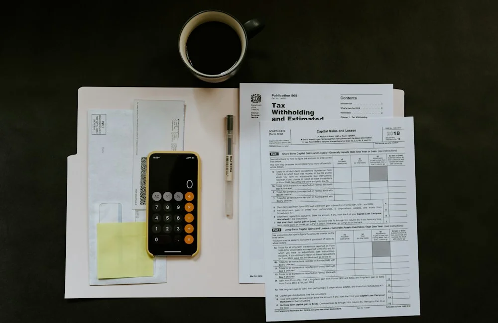
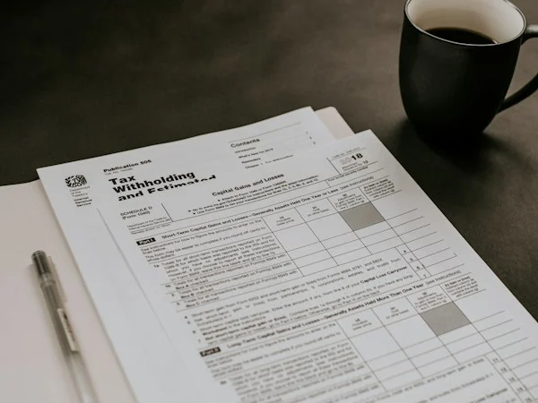

Business Valuation
6 MIN
Understanding the Foundations of Business Valuation
An introduction to the principles, purpose and context behind assessing the value of an operating business.
Explore practical perspectives on business valuation, mergers and acquisitions, financial analysis and the decisions that shape business value.
VALUATION / TRANSACTIONS / BUSINESS STRATEGYAn essential foundation for business owners, executives, and transaction advisors seeking clarity in enterprise valuation.

Business value is influenced by more than revenue or reported profit. Financial performance, future prospects, risk, market conditions and the nature of the business all contribute to how value is assessed.
Browse educational insights organized around the core strategic and financial challenges confronting modern enterprises.

Understanding value, valuation approaches and key financial drivers.
Browse Articles →Acquisition evaluation, transaction preparation and deal considerations.
Browse Articles →Financial information, quality of earnings and transaction risk considerations.
Browse Articles →Financial performance, trends and business fundamentals.
Browse Articles →Forecasting, assumptions and scenario analysis.
Browse Articles →Strategic decisions, ownership transitions and long-term business planning.
Browse Articles →A comprehensive library of practical frameworks, transaction guidance, and valuation methodology developed for corporate leaders.
An introduction to the principles, purpose and context behind assessing the value of an operating business.
Explore how different financial measures provide different perspectives on business performance and value.
Discover the income, market and asset-based approaches and the situations in which they may be considered.
Consider the financial records, operational information and strategic questions that may arise during sale preparation.
Explore financial performance, business risks, growth opportunities and other factors that can influence acquisition evaluation.
Understand the purpose of financial due diligence and why reliable financial information matters during transactions.
Learn how the income statement, balance sheet and cash flow statement work together to explain business performance.
Explore the role of assumptions, forecast drivers and alternative scenarios in financial planning.
Consider how operational discipline, financial visibility and strategic planning may support sustainable business development.
We couldn't find any articles matching your search query or selected topic. Try using a broader keyword or reset the filters.
Business valuation is context-specific. The appropriate approach depends on the nature of the business, available information and purpose of the assessment.
Important Principle: Independent business valuation harmonizes empirical calculation methodologies with qualitative comprehension of operating risks, competitive moats and capital reinvestment realities.
Reviewing historical financial statements, normalised profitability, recurring cash flow generation, working capital requirements and relevant multi-year trends.
Considering business plans, forecast assumptions, growth opportunities, market dynamics, operational capacity limits and sector growth benchmarks.
Evaluating customer concentration, supplier reliance, key-person dependencies, regulatory obligations and specific enterprise risk premiums.
Selecting and applying appropriate valuation approaches (DCF, comparable multiples, asset-based) tailored strictly to the purpose of the engagement.
A well-informed transaction begins with a clear understanding of financial information, business operations and the questions that may arise during evaluation.
Bring together reliable financial statements, reconciled management accounts, tax schedules and auditable working capital records.
Identify the key factors that influence revenue quality, gross margin stability, operational cash flow and sustainable run-rate earnings.
Consider customer relationships, supplier commitments, key personnel contracts, operational processes and other critical dependencies.
Clarify the purpose of the transaction, preferred transaction structures, valuation expectations and long-term commercial goals.
Structured guides and preparation frameworks designed to help corporate leaders organize financial records and approach strategic transitions with confidence.
A practical overview of information and schedules that may be useful when preparing for a formal business valuation.
A guide to historical financial records, ledgers and supporting information that may be relevant to an analytical assessment.
Key operational and governance considerations for business owners beginning to explore a potential ownership divestiture.
An introduction to the documentation, diligence workflow and preparation that may be relevant to an acquisition or sale process.
Explore how structured valuation, financial analysis and transaction advisory perspectives can support important business decisions.